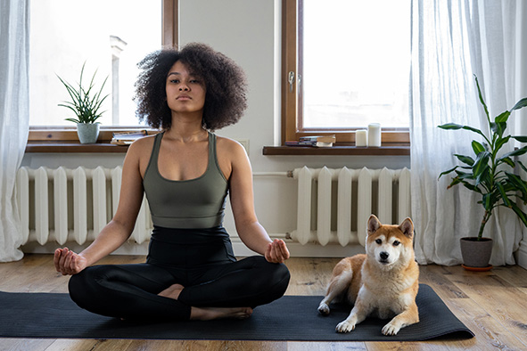

Founded in 2018, Yoga Self-improvement Techniques has been a sanctuary for those looking to discover their inner selves. Our mission is to provide a serene, safe, and welcoming space where individuals can explore and develop their own yoga journey. Our team is dedicated to ensuring that everyone feels at home, irrespective of age, gender, or yoga experience level.
Over the years, we have expanded our offerings, introducing a myriad of yoga styles suitable for beginners and advanced practitioners alike. Our community thrives on the principles of love, harmony, and personal growth. We believe in holistic well-being, emphasizing physical fitness, mental clarity, and emotional tranquility.
At Yoga Self-improvement Techniques, we pride ourselves on having a diverse team of certified instructors. Each brings a unique teaching style, ensuring that classes are both varied and catered to individual needs. Our studio boasts state-of-the-art facilities, providing a comfortable environment to practice. From our calming meditation rooms to our spacious yoga halls, every detail is designed with our members in mind.
Community is at the heart of everything we do. We host monthly events, workshops, and retreats, fostering a sense of togetherness and mutual growth. Our annual retreat, held amidst the serene landscapes of the Himalayas, is particularly popular among members. Beyond yoga, we promote a lifestyle of mindfulness, encouraging members to incorporate sustainable practices in their daily lives.